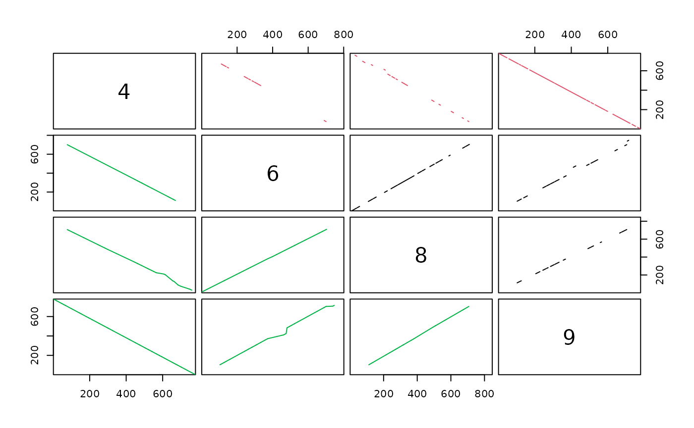

Loading in Genome Data with DECIPHER
Aidan Lakshman1
Source:vignettes/LoadingGenomeData.Rmd
LoadingGenomeData.RmdReading in Sequencing Data
In order to work with sequencing data, we first have to get it into R
in a format that allows us to work with it. The most commonly used
format for genomic data is the XString and
XStringSet classes, which are available through the
Biostrings package.
XStrings come in 4 distinct flavors, depending on the
characters allowed: - DNAString, for DNA data (ATGC, plus
gaps and ambiguity codes) - RNAString, for RNA data (AUGC,
plus gaps and ambiguity codes) - AAString, for amino acid
data (20 amino acids plus ambiguity codes, U, O, and unknown/gaps) -
BString, for any combination of any letters
When XString objects of the same type are combined, they
become an XStringSet. This provides an easy way to store
and work with genomics data. Below is an example of manually creating an
XStringSet:
library(DECIPHER) # Auto-imports Biostrings
sequences <- c('AGACT',
'AGACG',
'TCATT',
'TGCTG',
'AGCTG')
sequenceSet <- DNAStringSet(sequences)
sequenceSet## DNAStringSet object of length 5:
## width seq
## [1] 5 AGACT
## [2] 5 AGACG
## [3] 5 TCATT
## [4] 5 TGCTG
## [5] 5 AGCTGManually typing in sequences obviously isn’t a great system. Most
sequencing data are downloadable as .fasta or
.fastq files, so let’s look at a more realistic use-case
that reads in a data from a .fasta.
exampledata <- system.file('extdata', 'EX_Strepto_COG.fasta',
package='CompGenomicsBioc2022')
# note that we can also use format='fastq' for FASTQ datasets
exStringSet <- readDNAStringSet(exampledata, format="fasta")
exStringSet <- exStringSet[1:50]Success! Now we have a large example dataset to work with.
If we wanted to visualize these sequences, we can open them in a web
browser using BrowseSeqs() from DECIPHER:
BrowseSeqs(exStringSet)Aligning Sequences
Now that we have some sequences, let’s explore some of the ways we
can manipulate them. A complete demo of Biostrings is
outside the scope of this workshop, so we’ll just focus on functionality
added via DECIPHER. A common analysis in bioinformatics is
aligning sequences. This is easily achievable with either the
AlignSeqs() function or the AlignTranslation()
functions from DECIPHER. AlignTranslation()
aligns sequences based on their translated amino acid sequences, and is
significantly more accurate for DNA or RNA sequences. This code block
will also use RemoveGaps() from DECIPHER to
remove gaps that are shared by all sequences, in an effort to make the R
printout a little more informative.
ali1 <- AlignSeqs(exStringSet, verbose=FALSE)
RemoveGaps(ali1, removeGaps='common') # Better visualization## DNAStringSet object of length 50:
## width seq names
## [1] 1089 -----------------------...---------------------- 55
## [2] 1089 ATGCCACCCGCCAATCGCACG--...---------------------- 12664
## [3] 1089 -----------------------...---------------------- 83844
## [4] 1089 -----------------------...---------------------- 99294
## [5] 1089 -----------------------...---------------------- 106117
## ... ... ...
## [46] 1089 -----------------------...---------------------- 1077521
## [47] 1089 -----------------------...---------------------- 1092227
## [48] 1089 -----------------------...---------------------- 1099095
## [49] 1089 -----------------------...---------------------- 1101364
## [50] 1089 -----------------------...---------------------- 1114177
ali2 <- AlignTranslation(exStringSet, verbose=FALSE)
RemoveGaps(ali2, removeGaps='common') # Better visualization## DNAStringSet object of length 50:
## width seq names
## [1] 1224 -----------------------...---------------------- 55
## [2] 1224 -----------------------...---------------------- 12664
## [3] 1224 -----------------------...---------------------- 83844
## [4] 1224 -----------------------...---------------------- 99294
## [5] 1224 -----------------------...---------------------- 106117
## ... ... ...
## [46] 1224 -----------------------...---------------------- 1077521
## [47] 1224 -----------------------...---------------------- 1092227
## [48] 1224 -----------------------...---------------------- 1099095
## [49] 1224 -----------------------...---------------------- 1101364
## [50] 1224 -----------------------...---------------------- 1114177Alignments tend to start with a lot of gaps, and as a result viewing
them through R isn’t always super informative. As before, we can
visualize this alignment in a much better way using
BrowseSeqs():
BrowseSeqs(ali2)Alignment-Free Analysis
Another common analysis is to look at syntenic hits between sequences without aligning them. The result allows us to easily visualize differences between two sequences without having to align them. Let’s look at an example of finding syntenic hits between the first 6 sequences in our set.
to_select <- c(4,6,8,9)
synData <- exStringSet[to_select]
names(synData) <- as.character(to_select)
dbConn <- dbConnect(SQLite(), ":memory:")
Seqs2DB(synData, "XStringSet", dbConn, identifier=as.character(to_select))
syn <- FindSynteny(dbConn, verbose=FALSE)
dbDisconnect(dbConn)
pairs(syn)
What are we looking at with this plot? Each plot compares two genomes, and each dot is a syntenic hit between the two genomes. The X position of the dot is its location on the first genome, and the Y position is its position on the second genome. If we had identical genomes, we would expect to see a diagonal line \(y=x\), indicating that all bases occur at the same place in both genomes. Gaps indicate areas that do not match, and points off the diagonal indicate matching areas in different places on each genomes.
You may also notice that this example creates a SQLite table prior to
running FindSynteny(). DECIPHER is built
around working with sequences via SQLite tables to allow for analysis at
scale. When working with hundreds of thousands of genomes, we can’t
always just store the files within memory on our computer. This won’t be
covered in this tutorial, but advanced users can refer to the
DECIPHER docs to find out more about using database files.
I’ve also included more information on these in the Function Reference
page for this section.